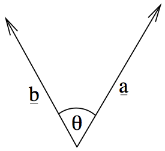
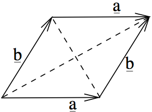
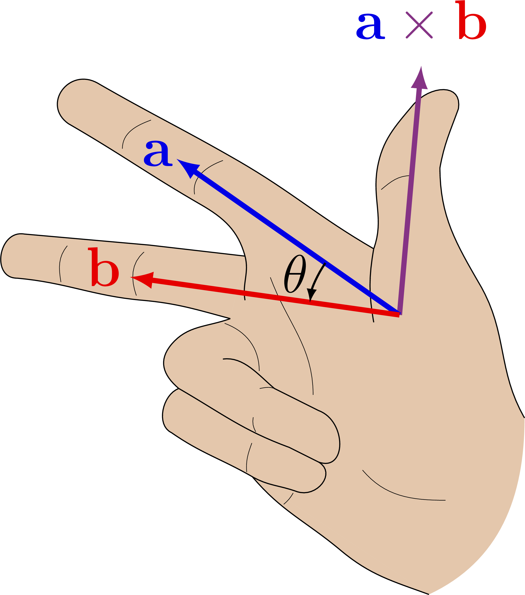
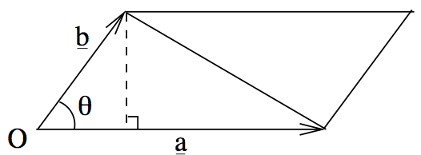

Week 3: Dot and cross products
Vector-vector multiplication
So far for vectors we have defined addition of two vectors, and the multiplication of a vector by a scalar. What about multiplying two vectors together?
For vector addition, we add the components together to get a new vector. The obvious definition for vector multiplication would seem to be multiplying the components to get a new vector. However, this operation turns out to be somewhat meaningless and useless for mathematicians and physicists.
Instead, we will see two types of ‘multiplication’, called the dot and cross product.
The dot product
The first type of multiplication is called the scalar product, because the result is a scalar. We will usually call it the dot product and you might also see inner product.
This operation is defined for \(\mathbb{R}^n\) for all \(n\) as follows:
\[{\mathbf{a}}\cdot{\mathbf{b}} = |{\mathbf{a}}|\,|{\mathbf{b}}|\,\cos\theta,\]
where \(\theta\) is the angle between the two vectors.

Properties
Following the definition above and the set of rules for vectors, you can prove the following rules:
- If \({\mathbf{a}}\) and \({\mathbf{b}}\) are perpendicular, \({\mathbf{a}}\cdot{\mathbf{b}}=0\).
- \({\mathbf{a}}\cdot{\mathbf{b}} = 0\) tells us that the vectors are perpendicular, or one of \({\mathbf{a}}\) and \({\mathbf{b}}\) is \({\mathbf{0}}\);
- \({\mathbf{a}}\cdot{\mathbf{a}} = |{\mathbf{a}}|^2\);
- \({\mathbf{a}}\cdot(\lambda{\mathbf{b}}) = \lambda ({\mathbf{a}}\cdot{\mathbf{b}})\);
- \({\mathbf{a}}\cdot{\mathbf{b}} = {\mathbf{b}}\cdot{\mathbf{a}}\): the dot product is commutative;
- \({\mathbf{a}}\cdot({\mathbf{b}}+{\mathbf{c}}) = {\mathbf{a}}\cdot{\mathbf{b}} + {\mathbf{a}}\cdot{\mathbf{c}}\): the dot product is distributive over addition1.
The dot product with components
A particularly important property becomes apparent when we find the dot product of vectors in components \({\mathbf{a}}=\begin{bmatrix} a_1 \\ a_2 \\ a_3\end{bmatrix}\) and \({\mathbf{b}}=\begin{bmatrix} b_1 \\ b_2 \\ b_3\end{bmatrix}\) using the rules above:
\[ \begin{aligned} {\mathbf{a}}\cdot{\mathbf{b}} &= \left(a_1 \hat{{\mathbf{x}}} + a_2 \hat{{\mathbf{y}}} + a_3\hat{{\mathbf{z}}}\right)\cdot\left(b_1 \hat{{\mathbf{x}}} + b_2 \hat{{\mathbf{y}}} + b_3\hat{{\mathbf{z}}}\right) \\ &= a_1b_1 \hat{{\mathbf{x}}}\cdot\hat{{\mathbf{x}}} + a_1b_2 \hat{{\mathbf{x}}}\cdot\hat{{\mathbf{y}}} + a_1b_3 \hat{{\mathbf{x}}}\cdot\hat{{\mathbf{z}}} + a_2b_1 \hat{{\mathbf{y}}}\cdot\hat{{\mathbf{x}}} + a_2b_2 \hat{{\mathbf{y}}}\cdot\hat{{\mathbf{y}}} + a_2b_3 \hat{{\mathbf{y}}}\cdot\hat{{\mathbf{z}}} \\ &\;+ a_3b_1 \hat{{\mathbf{z}}}\cdot\hat{{\mathbf{x}}} + a_3b_2 \hat{{\mathbf{z}}}\cdot\hat{{\mathbf{y}}} + a_3b_3 \hat{{\mathbf{z}}}\cdot\hat{{\mathbf{z}}} \\ &= a_1b_1 + a_2b_2 + a_3b_3, \end{aligned} \]
where we have used the facts that \(\hat{{\mathbf{x}}}\cdot\hat{{\mathbf{x}}}=\hat{{\mathbf{y}}}\cdot\hat{{\mathbf{y}}}=\hat{{\mathbf{z}}}\cdot\hat{{\mathbf{z}}}=1\) and \(\hat{{\mathbf{x}}}\cdot\hat{{\mathbf{y}}}=\hat{{\mathbf{x}}}\cdot\hat{{\mathbf{z}}}=\hat{{\mathbf{y}}}\cdot\hat{{\mathbf{z}}}=0\).
To calculate the dot product of two vectors, multiply the components together and add them up.
Think: if \({\mathbf{a}}=\begin{bmatrix} 2 \\ 1 \\ -1\end{bmatrix}\) and \({\mathbf{b}}=\begin{bmatrix} 0 \\ 1 \\ 1\end{bmatrix}\), what is \({\mathbf{a}}\cdot{\mathbf{b}}\)? What do you deduce about the vectors?
\(2\times0 + 1\times1 + (-1)\times1 = 0\).
The dot product is zero and neither of the vectors is \({\mathbf{0}}\) so the vectors are perpendicular.
Very often people do something like \(\begin{bmatrix} 1 \\ 2 \\ 3\end{bmatrix}\cdot\begin{bmatrix} 3 \\ 2 \\ 4\end{bmatrix} = \begin{bmatrix} 1\times 3 \\ 2\times 2 \\ 3\times 4\end{bmatrix}\). This is WRONG because the result of the dot product must be a scalar, not a vector.
Example for dot products
Show that the diagonals of a rhombus are perpendicular.
Let the corners of the rhombus be \(A\), \(B\), \(C\) and \(D\).

It’s a paralellogram, so \({\overrightarrow{AB}}={\overrightarrow{DC}}\) - let’s call this \({\mathbf{a}}\) - and \({\overrightarrow{BC}}={\overrightarrow{AD}}={\mathbf{b}}\).
Futhermore, for a rhombus we know the side lengths are the same, so \(|{\mathbf{a}}| = |{\mathbf{b}}|\).
We want to show that \({\overrightarrow{AC}}\cdot{\overrightarrow{BD}} = 0\).
We see from the diagram that \({\overrightarrow{AC}} = {\mathbf{a}}+{\mathbf{b}}\) and \({\overrightarrow{BD}} = {\mathbf{b}}-{\mathbf{a}}\). Then
\[ {\overrightarrow{AC}}\cdot{\overrightarrow{BD}} = ({\mathbf{a}}+{\mathbf{b}})\cdot({\mathbf{b}}-{\mathbf{a}}) = {\mathbf{a}}\cdot{\mathbf{b}} - {\mathbf{a}}\cdot{\mathbf{a}} + {\mathbf{b}}\cdot{\mathbf{b}} - {\mathbf{b}}\cdot{\mathbf{a}} = |{\mathbf{b}}|^2-|{\mathbf{a}}|^2 = 0. \]
The cross product
Unlike the dot product, which is valid in any dimensions, the cross product is only defined in three dimensions.2 Also unlike the dot product, the cross product of two vectors is a vector. For this reason it’s called the vector product. It’s written with a cross \(\times\).3
The geometric definition is as follows:
- If either \({\mathbf{a}}\) or \({\mathbf{b}}\) is \({\mathbf{0}}\), or they’re parallel, then \({\mathbf{a}}\times{\mathbf{b}}={\mathbf{0}}\).
- Otherwise, find a vector the is perpendicular to both \({\mathbf{a}}\) and \({\mathbf{b}}\) using the right-hand rule:

- The magnitude of the result \(|{\mathbf{a}}\times{\mathbf{b}}| = |{\mathbf{a}}||{\mathbf{b}}|\sin\theta\).
Note the similarity to the dot product, but with sine instead of cosine, and the fact it’s a vector.
Properties
The following properties have similarities and differences with the corresponding ones for the dot product:
- If \({\mathbf{a}}\) and \({\mathbf{b}}\) are parallel, \({\mathbf{a}}\times{\mathbf{b}}={\mathbf{0}}\).
- \({\mathbf{a}}\times{\mathbf{b}} = {\mathbf{0}}\) tells us that the vectors are parallel, or one of \({\mathbf{a}}\) and \({\mathbf{b}}\) is \({\mathbf{0}}\);
- \({\mathbf{a}}\times{\mathbf{a}} = {\mathbf{0}}\);
- \({\mathbf{a}}\times(\lambda{\mathbf{b}}) = \lambda ({\mathbf{a}}\times{\mathbf{b}})\);
- \({\mathbf{a}}\times{\mathbf{b}} = -{\mathbf{b}}\times{\mathbf{a}}\): the dot product is anticommutative;
- \({\mathbf{a}}\times({\mathbf{b}}+{\mathbf{c}}) = {\mathbf{a}}\times{\mathbf{b}} + {\mathbf{a}}\times{\mathbf{c}}\): the cross product is distributive over addition.
The cross product with components
If you apply the rules above, using the fact that \(\hat{{\mathbf{x}}}\times\hat{{\mathbf{y}}}=\hat{{\mathbf{z}}}\) - which is called a right-handed coordinate system - you can prove the following important formula:
\[ \begin{bmatrix} a_1 \\ a_2 \\ a_3\end{bmatrix} \times \begin{bmatrix} b_1 \\ b_2 \\ b_3\end{bmatrix} = \begin{bmatrix} a_2b_3-a_3b_2 \\ a_3b_1-a_1b_3 \\ a_1b_2 - a_2b_1\end{bmatrix}. \]
This ugly formula is one of the only things in this module I recommend you learn by heart. There are patterns which can help you memorise it; try to find something that works for you.
People mess up the second component of the cross product. It might be the negative of what you intuitively think it should be.
Many people like to write the cross product as the determinant of a matrix, as in
\[ \begin{bmatrix} a_1 \\ a_2 \\ a_3\end{bmatrix} \times \begin{bmatrix} b_1 \\ b_2 \\ b_3\end{bmatrix} = \left|\begin{matrix} \hat{{\mathbf{x}}} & \hat{{\mathbf{y}}} & \hat{{\mathbf{z}}} \\ a_1 & a_2 & a_3 \\ b_1 & b_2 & b_3 \end{matrix}\right|. \]
Don’t worry if you’re not familiar with determinants (or matrices), we’ll see them in a couple of weeks.
I think this formula is stupid anyway because you can’t put vectors inside a matrix like that. But if it works for you, feel free to use it.
Think: if \({\mathbf{a}}=\begin{bmatrix} 2 \\ 1 \\ -1\end{bmatrix}\) and \({\mathbf{b}}=\begin{bmatrix} 0 \\ 1 \\ 1\end{bmatrix}\), what is \({\mathbf{a}}\times{\mathbf{b}}\)?
\[\begin{bmatrix} 1\times 1-(-1)\times 1 \\ -1\times 0-2\times 1 \\ 2\times 1 - 1\times 0\end{bmatrix} = \begin{bmatrix} 2 \\ -2 \\ 2\end{bmatrix}.\]
Applications
You may remember the formula for the area of a triangle as \(\frac{1}{2} b c \sin \alpha\) where \(\alpha\) is the angle between the sides of length \(b\) and \(c\). Looking at the definition of the cross product, we see that
\[\frac{1}{2}|{\mathbf{a}}\times{\mathbf{b}}|\]
is the area of the triangle between \({\mathbf{a}}\) and \({\mathbf{b}}\). Similarly, \(|{\mathbf{a}}\times{\mathbf{b}}|\) is the area of the parallelogram with sides \({\mathbf{a}}\) and \({\mathbf{b}}\):

Example for cross products
Find a unit vector that is perpendicular to both \({\mathbf{a}}=\begin{bmatrix} 3 \\ 1 \\ 2\end{bmatrix}\) and \({\mathbf{b}}=\begin{bmatrix} 1 \\ 1 \\ -1\end{bmatrix}\).
We know that the result of the cross product \({\mathbf{a}}\times{\mathbf{b}}\) is perpendicular to both of them:
\[\begin{bmatrix} 3 \\ 1 \\ 2\end{bmatrix}\times\begin{bmatrix} 1 \\ 1 \\ -1\end{bmatrix} = \begin{bmatrix} -3 \\ 5 \\ 2\end{bmatrix}.\]
The question asks for a unit vector, so we need to divide this vector by its own magnitude. The magnitude is
\[\sqrt{(-3)^2+5^2+2^2} = \sqrt{38}\]
and so the final answer is
\[\begin{bmatrix} \frac{-3}{\sqrt{38}} \\ \frac{5}{\sqrt{38}} \\ \frac{2}{\sqrt{38}}\end{bmatrix}.\]
The vector opposite to this, i.e. \(\begin{bmatrix} \frac{3}{\sqrt{38}} \\ \frac{-5}{\sqrt{38}} \\ \frac{-2}{\sqrt{38}}\end{bmatrix}\), would also satisfy the requirements.
Footnotes
This is easiest to prove using the component form of the dot product, but unfortunately that gives a circular proof. To prove it directly requires a lot of geometry and trigonometry.↩︎
Sometimes people define a cross product in two dimensions by imagining the 2d vectors on a plane in 3d space, but we won’t use that definition.↩︎
Occasionally you see people use \(\wedge\) instead. In modern maths this the exterior product, which is a related but different concept.↩︎